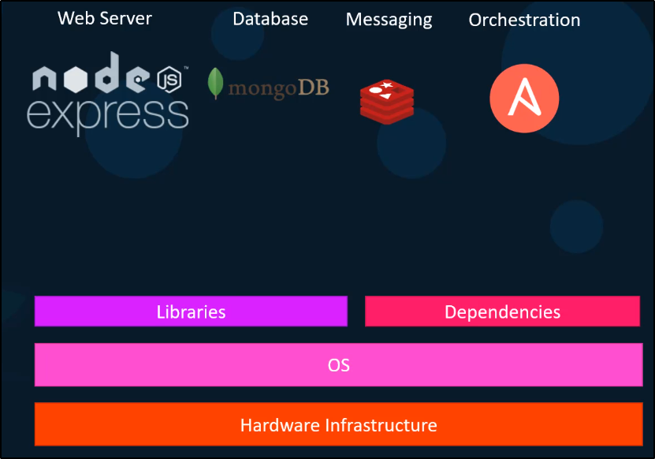

Esempio per spiegare l'utilizzo di Docker:
Immagina di creare un APP usando queste diverse components.

Questo peroò puo dare problemi di dipendenze, librerie, OS e perfino a livello Hardware.
Altro problema è che alcuni servizi potrebbero necessitare di versioni di library
che altri servizi si riferiscono ma a versioni differenti!
In pratica: tutto lo stesso macello spiegato su Kubernetes che usa i Container!

Ed ecco qua che arriva Docker a salvarci la pelle: basta che tutti abbiano Docker!

I Container shareno semplicemente dei processi, rete e mounts propri:
Inoltre fanno share dello stesso OS Kernel!

Ad esempio:
Ubuntu sotto? Sopra dei container con tutti i Kernel Linux!
NB: Se Runni un OS Kernel Windows, per creare un Linux Container creerà una Linux VM
sulla quale appoggiarsi!

Ecco le differenze tra Docker e le VM:

Spesse volte, VM e Containers sono usati assieme: